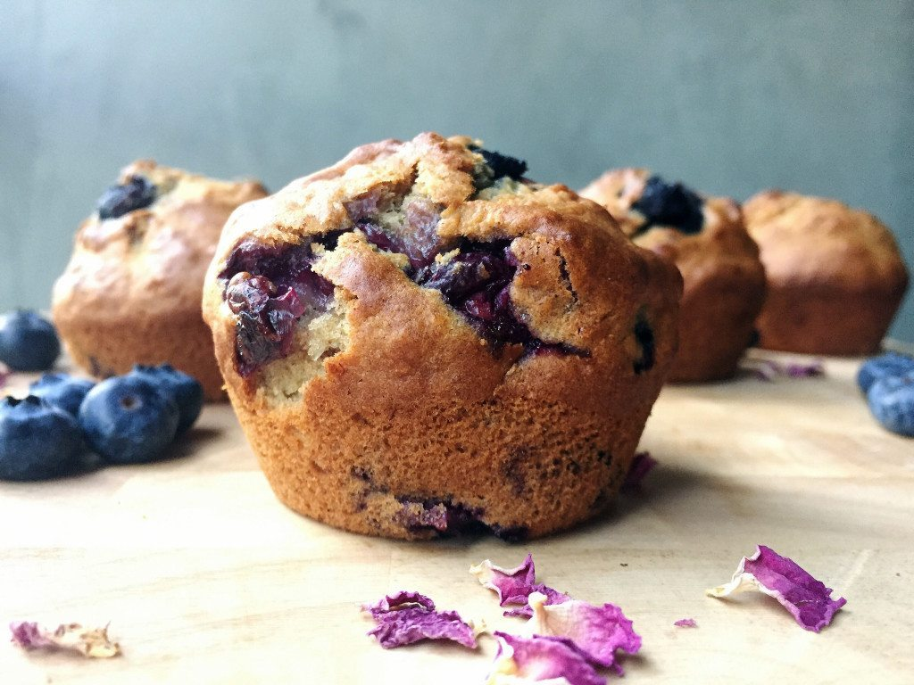

Receta bizcocho súper sabroso y saludable
Descripción
Estos muffin pueden ser un salvavidas en un momento en que no tienes que comer y necesitas un tente en pie; y por supuesto, hacerlos lo más saludables posibles es parte de nuestro estilo de vida.
Ingredientes
- 1/2 taza (95 g) de aceite de oliva extra virgen
- 1/4 taza (80 g) de miel
- 2 huevos grandes
- 2 plátanos maduros, machacados (mis plátanos eran un poco más pequeños y salieron a 152 g, sin la cáscara)
- 1/2 taza (130 g) de yogur natural de leche entera
- 1 cucharadita de extracto de vainilla
- Amontonar 1/2 cucharadita de canela molida
- 1/4 de cucharadita de nuez moscada molida
- 1 cucharadita de levadura en polvo
- 1 + 1/2 tazas (246 g) de arándanos, lavados y secados con cariño
- 1 + 1/2 tazas (193 g) de harina integral
Elaboración paso a paso
Primer paso: Precaliente el horno a 180 grados.
Paso dos: Prepare un molde para muffins de 12 tazas, ya sea con una pequeña capa de aceite de coco y harina, spray antiadherente o moldes para muffins: ¡a elección del distribuidor!
Tercer paso: Agregue el aceite de oliva y la miel a un tazón grande para mezclar y mezcle para combinar.
Cuarto paso: Agrega los huevos y el yogur. Mezclar hasta que esté muy bien combinado.
Quinto paso: Agregue el puré de plátanos, vainilla, canela, nuez moscada, cardamomo, polvo de hornear, bicarbonato de sodio y sal. Mezclar hasta que esté bien combinado.
Sexto paso: Agregue la avena y casi toda la harina, guardando un poquito de harina para el paso 7. Revuelva hasta que esté combinado.
Séptimo paso: Mezcle suavemente los arándanos con la harina reservada
Octavo paso: Distribuya uniformemente su masa entre las 12 tazas del molde para muffins preparado. No es necesario que sean idénticos, solo lo suficiente para que se horneen al mismo tiempo.
Noveno paso:Hornee durante 20 a 25 minutos, o hasta que al insertar un palillo en el centro salga limpio.
Deja enfriar completamente sobre una rejilla de alambre.¡Y a jalar!